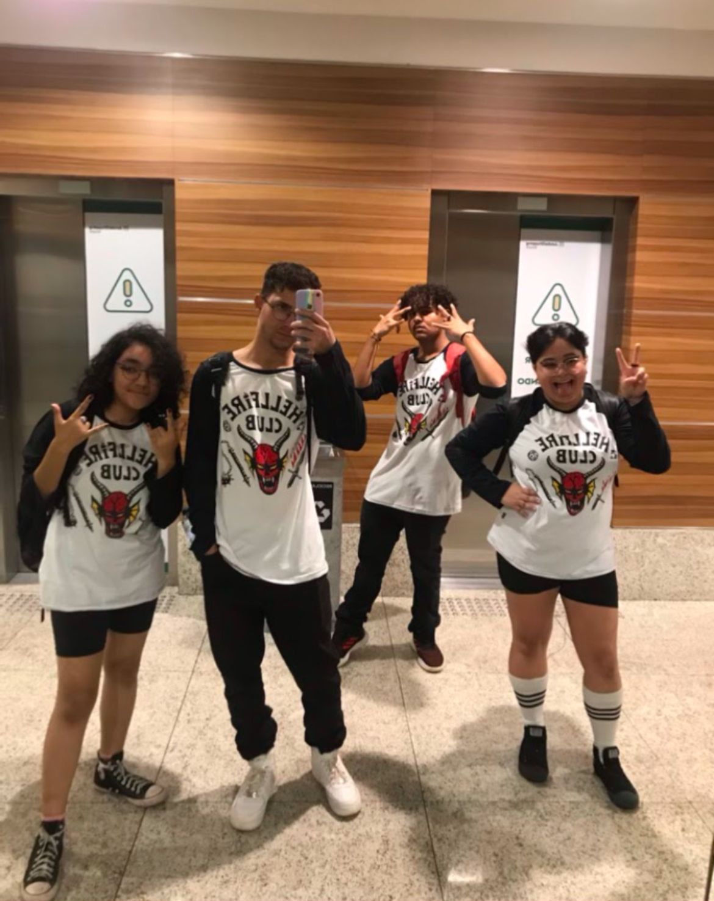
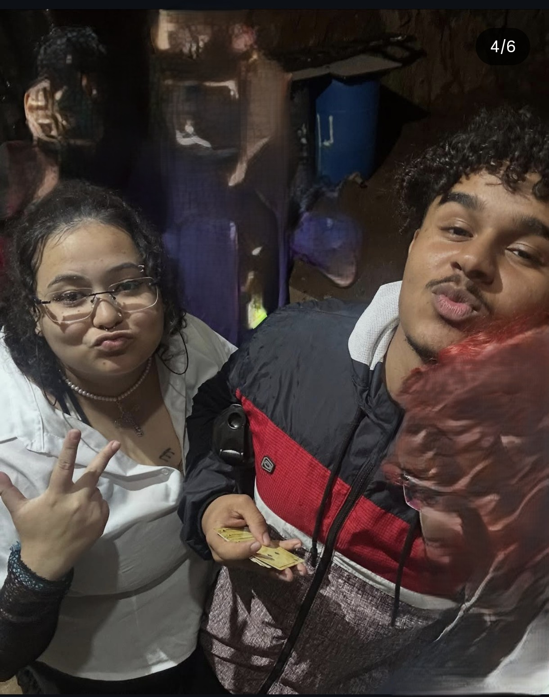
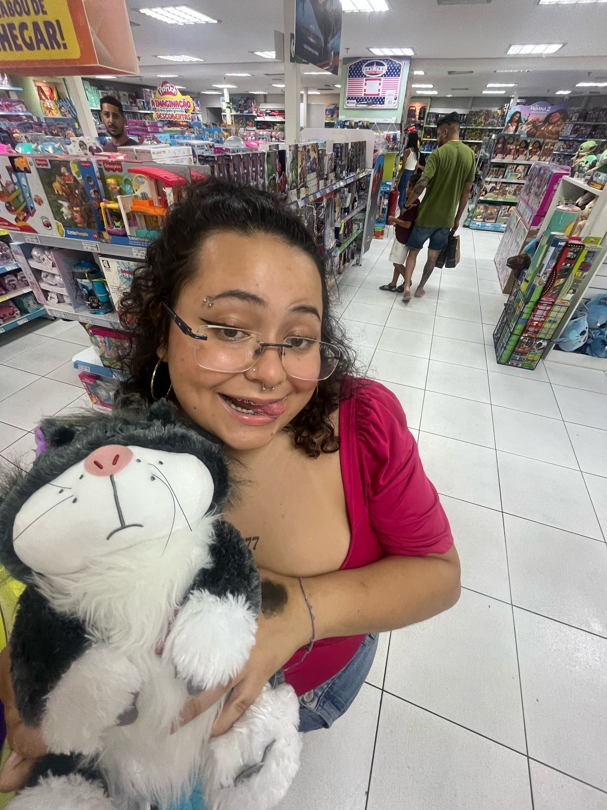
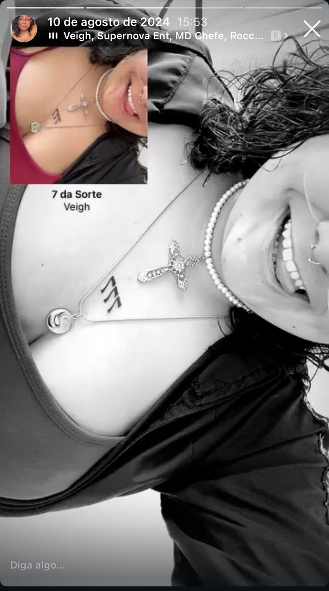
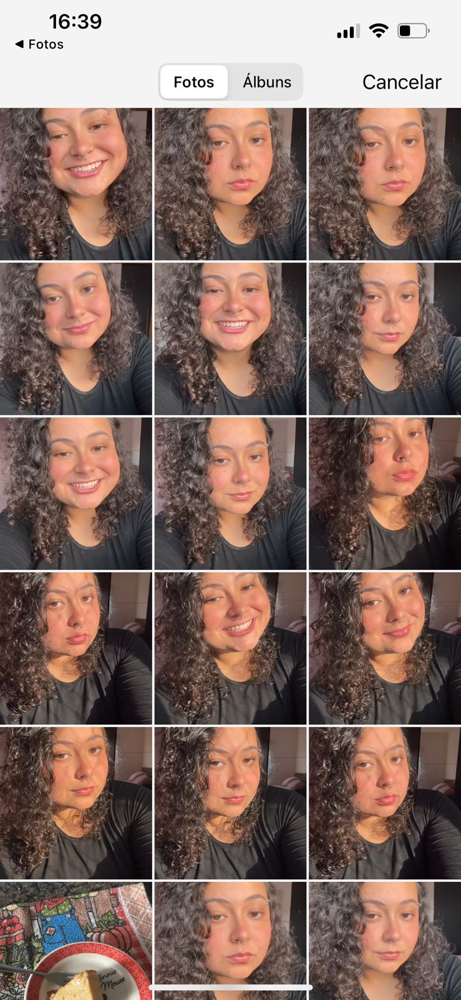
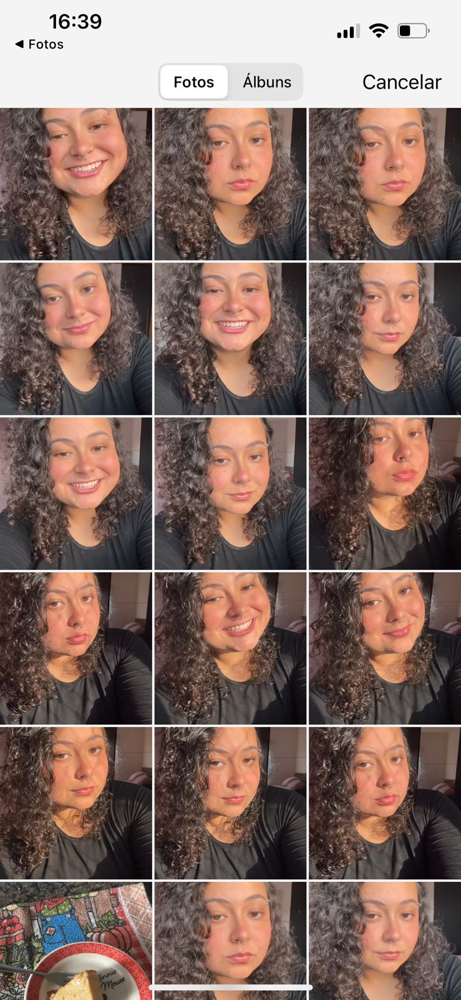
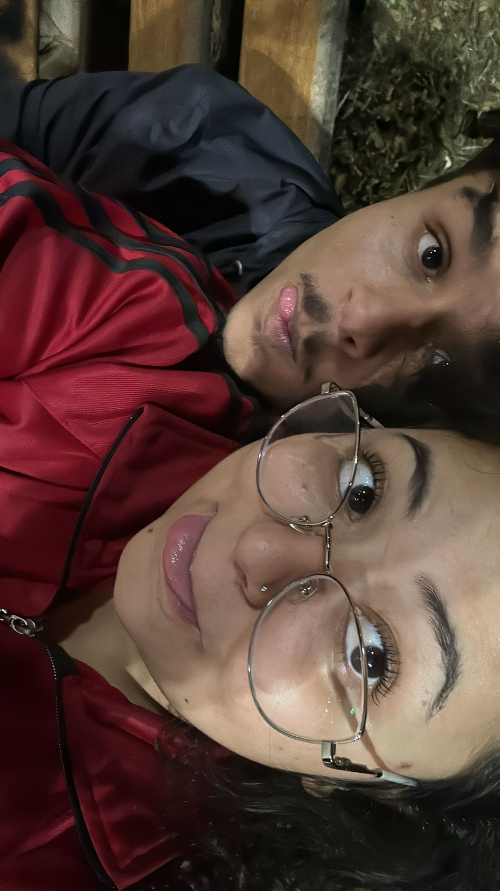

Meu Amor,
Espero que tudo que eu tenha dado e feito nesse seu primeiro e tão especial momento tenha suprido suas espectativas minimamente, eu amo demais você e queria fazer essa pequena surpresinha para falar um pouco o quanto te amo e quero cada vez mais continuar te amando.
Desculpa se algumas coisas estiverem bugadas ou feias, tentei ir ao máximo no pelo
Gostosa de Lima da Silva Abaixo
Prólogo
Bom, você não achou a foto de nós no ginásio então vai essa mesmo.
Ainda lembro quando te conheci, foi estranho, a gente mal tinha trocado uma palavra pessoalmente e as primeiras coisas que fez foi me zuar Bagre demaisssss e no fim fomos construindo essa amizade a base de xingamentos, ciúmes não explicado e uma preocupação exagerada e mal expressada
Vendo isso sinceramente precisamos de terapia? ISSO VAI FICAR MAIOR QUE UMA CARTA
Meu amor, você tem sido muito especial pra mim, mesmo que tenhamos brigado mais do que confessado o amor obscuro que sentíamos um pelo o outro, mas eu entendo no fim, orgulhosos demais para aceitar, confusos demais para perceber. E no fim talvez fosse sobre isso a demora, era para entender o outro e no fim sermos o ideal um para o outro.
Capítulo 1: O Começo
Não é a foto do nosso primeiro beijo eu sei, mas krls temos poucas foto juntos antes de beijar pqp.
Bom, como explicar o dia do aniversário do guilherme onde demos o trauma de barulho de beijo nosso para o Lucas? Foi demais, foi bom, apaixonante e como já te disse MUITO ASSUSTADOR !!!
Sei que após me achou babaquinha, mas repito quantas veze precisar que tive medo. E foi a coisa mais idiota que fiz da qual me arrependo muito, não querendo te machucar e me machucar achei que a melhor coisa era agir de maneira que ocorresse isso...
Capítulo 2: A perdição

Juro que a foto do coringa não é pra dizer que coringou.
Essa definitivamente não é a melhor parte para se escrever e no momento que comecei fiquei parado olhando para o computador os dois passaram por momentos horríveis né?
De formas diferentes, mas cada um tentando esquecer a vida e sumir do mundo enquanto vive ele ao mesmo tempo. Me desculpa por ter chegado tarde demais, mas que bom que cheguei e que bom que você também veio. Apesar de tudo ainda nos amavamos de alguma forma né? KKKKKKKKKKKKKKKKKKKKKK AIAI.
Capítulo 3: O Reencontro
 
 


Perdi tantas fases sua, tantos momentos, mas te reencontrar foi fantástico, em algumas coisas iguai porém aos poucos fui vendo como você evoluiu, acho incrivel como mudou tantos pensamentos e continua mudando e isso sendo você mesma sabe? Lidando com as responsabilidades chatas e não se perdendo que é o principal, eu amo tanto sua evolução e mesmo não tendo feito parte de todo processo fico feliz de estar agora acompanhando e ajudando no que posso.
Capítulo 4: O Ínicio do Fim
Como começar a falar desse final né? Do nada virarmos tudo? o que já era realmente se tornar real, a gente forever?
Tínhamos muito para ver ainda
 As dúvidas...
As dúvidas... As certezas que estavam na nossa cara.
As certezas que estavam na nossa cara.-  Quando tudo mudou e a gente se entregou.
E no fim tal como a Fênix em Harry Potter, renascemos de outra forma, com outro propósito. Vivermos para sempre juntos e não largar a mão um do outro...